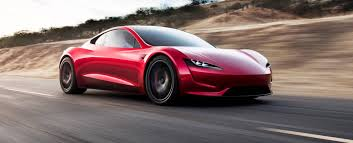
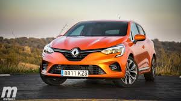
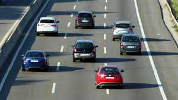

El primer vehículo con motor de combustión interna por gasolina fue desarrollado por Benz en 1885.
El 20% de los conductores busca un apodo para su automóvil.
Los primeros cinturones de seguridad fueron incluidos en el año 1959 por Volvo.
La pintura , además de ser un elemento estético y de protección de la chapa de los automóviles, podría llegar a convertirse en un elemento que añadiera seguridad al vehículo si brillara por la noche. Dicha cualidad permitiría reducir el número de accidentes al ser vistos con facilidad por cualquier usuario y no solo depender de los sistemas de iluminación del vehículo, según apuntan desde CertifiedFirst.
Las ventas de vehículos usados con más de 15 años han aumentado casi el 30% en septiembre, hasta registrar 73.417 unidades, lo que equivale al 35% del total del mercado, según los datos publicados por la Asociación Nacional de Vendedores de Vehículos a Motor, Reparación y Recambios (Ganvam).
Del total de transacciones de estos vehículos usados, solo en las regiones de Madrid y Cataluña se ha concentrado la cuarta parte de las ventas, lo que supone un punto más que el mismo mes del año pasado. Estos resultados también permiten afirmar que es en aquellos territorios con mayor incidencia del coronavirus donde los conductores están orientando sus preferencias hacia la compra de vehículos con antigüedad, como opción alternativa al uso del transporte público.
